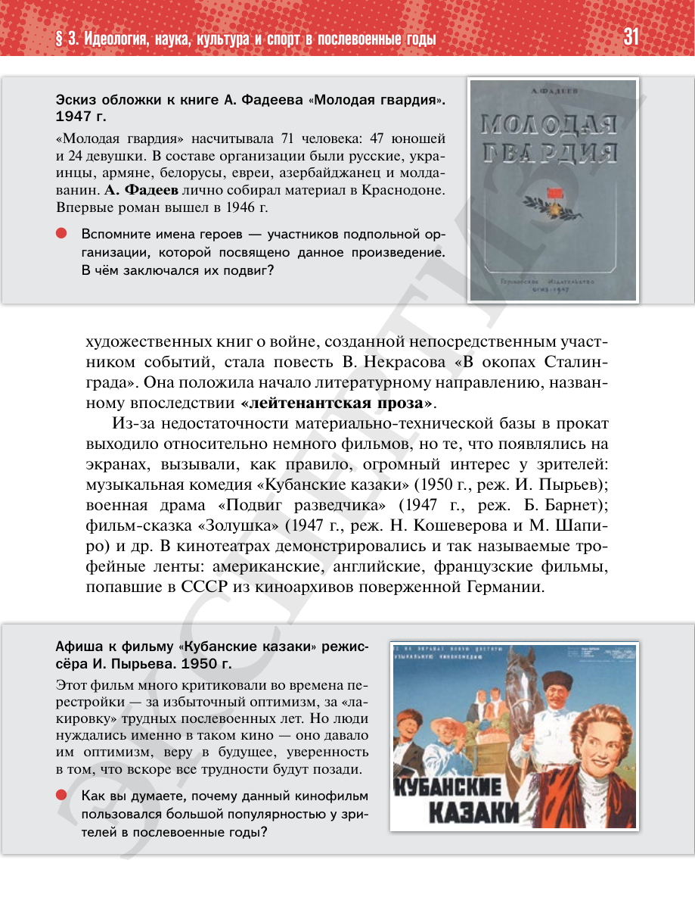

⌂
Мединский.нет
Последнее обновление: 27.08.2026
Мединский.нет
›
История России. 11 класс. Базовый уровень
›
Глава I. СССР в 1945—1991 гг.
›
§ 3. Идеология, наука, культура и спорт в послевоенные годы
›
стр. 31

← стр. 30
Оглавление
стр. 32 →
×